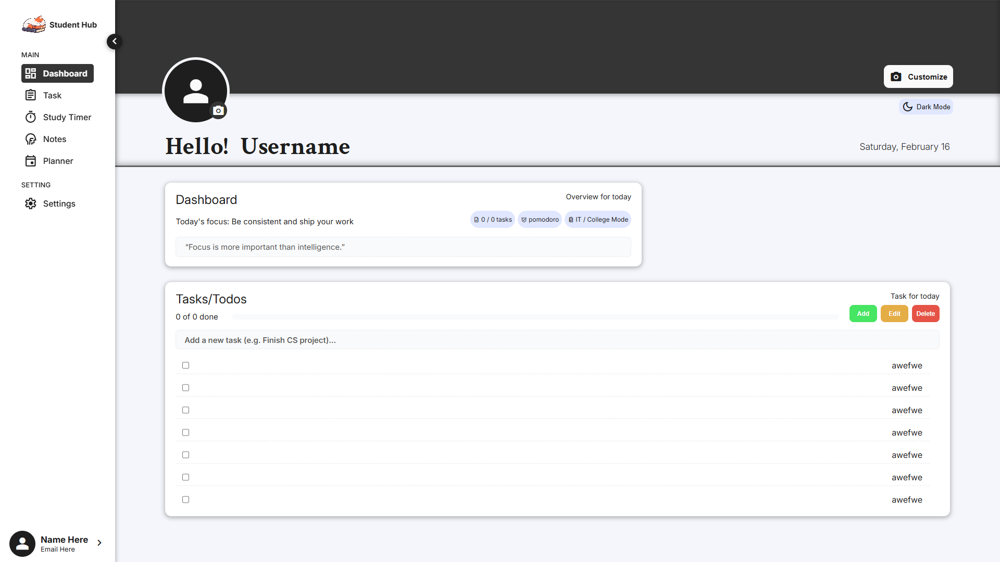
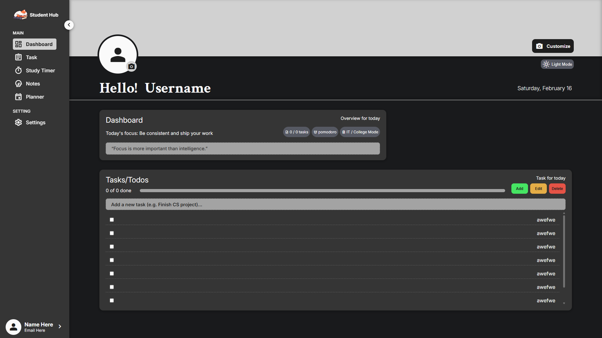
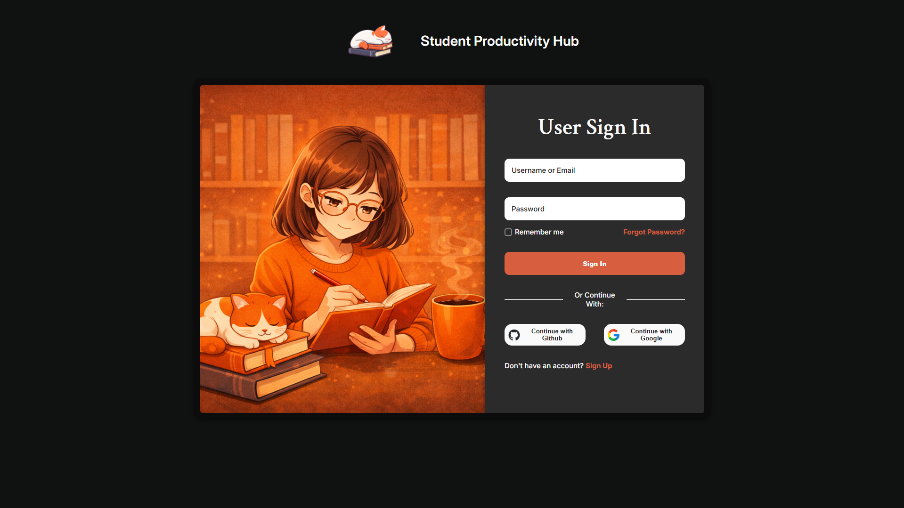

Stay ahead of your
classes, projects, and exams.
Student Productivity Hub keeps your to-dos, assignments, and weekly schedule in one clean dashboard — so you can stop juggling apps and start studying with clarity.
Designed for college & IT students
Tracks focus hours, not screen time
See tasks and schedule in one view
- 
- 
- 
FEATURES
Everything you need to stay on top of student life.
Task managers and calendars are great — but Student Productivity Hub is build specially for how students study, submit, and switch between subjects all day.
done_all
Smart task board for classes and projects
Capture everything from quick readings to semester-long projects. Group tasks by course, due date
or priority so you always know what deserves your energy first.
timer
Built-in focus timer, not just a clock
Run Pomodoro-style sessions with clear goals. then log how many deep-work blocks you complete per
subject. Stop working "until you're tired and start working in intentional sprints.
calendar_month
Weekly schedule, made for real life
View lectures, labs, deadlines, and personal time in a single weekly layout. Block time for deep
work and see where you're over-committed before the week even starts.
analytics
Lightweight productivity insights
See a simple breakdown of where your focus goes: by course, by weekday, and by type of work
(reading, coding, writing). No corporate dashboards, just student-friendly clarity.
network_intelligence
Quick notes where you actually study
Drop ideas, formulas, code snippets, or exam reminders right beside your tasks. Keep everything
related to "that one exam" in one calm place instead of five different apps.
bedtime
Soft UI for late-night and early-morning sessions
A calm dark interface with subtle gradients, soft shadows, and just enough color to keep you awake
without overwhelming you. Designed for long study sprints.
HOW IT HELPS
Designed around the way students actually work.
Student life is a mix of lectures, project groups, late-night cram sessions, and everything in between. Student Productivity Hub doesn't try to "gamify" you - it just keeps all the moving parts in one place, with quiet structure instead of constant noise.
- Replace ten messy tabs with one clear overview of your week.
- Turn deadlines into small, scheduled blocks instead of last-minute panic.
- See how much focused time you're giving each subject, not just how long you sit at your desk.
- Build a repeatable rhythm that works whether you're on-campus, remote, or somewhere in between.
9:00 AM • Plan your day in 3 minutes
Open the dashboard, drag tasks into "Today", and block a single focus window for your hardest class.
Keep the plan small enough that it still feels doable.
2:00 PM • Run a deep-work sprint
Start a 25-minute focus block for your lab report. No social feeds, no extra tabs — just the task and a timer.
See your focus streak grow as you repeat this for each class.
10:30 AM • Close the loop calmly
Review what you completed, reschedule what can wait, and jot down tomorrow's first task so you don't carry it in your head.
End the day with clear picture, not a wall of red notifications.